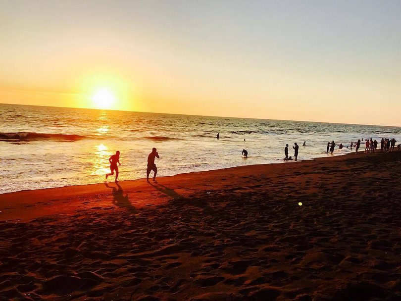
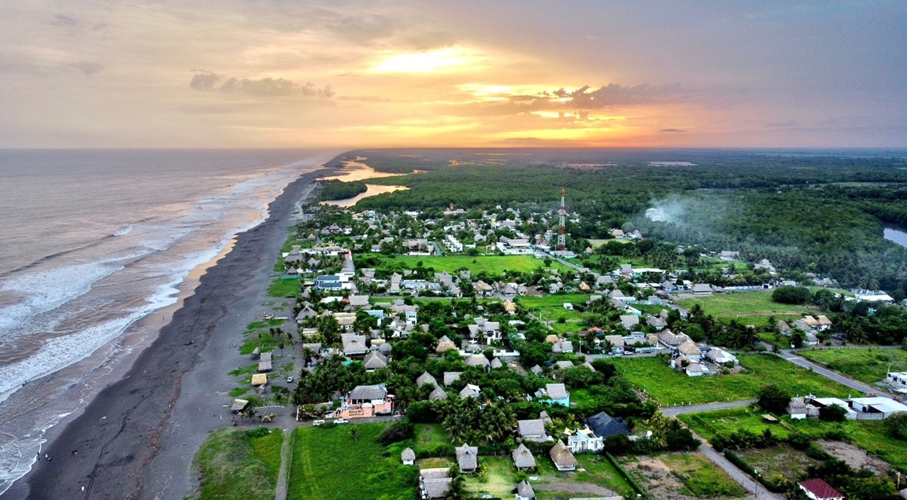
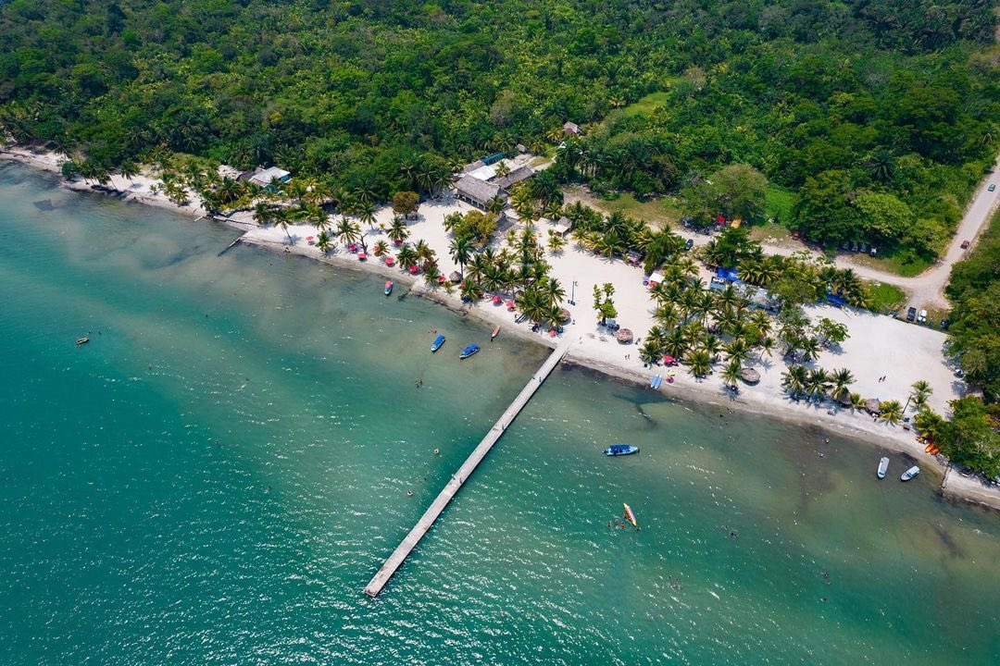
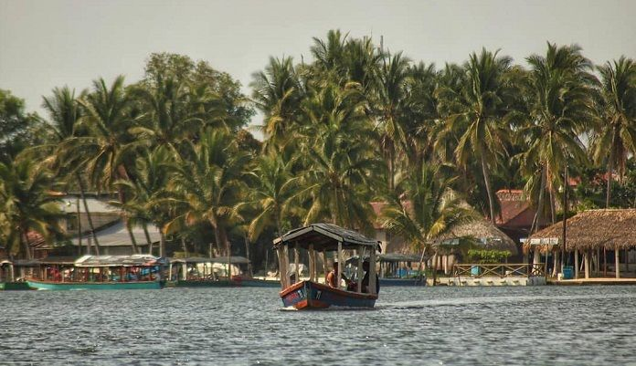
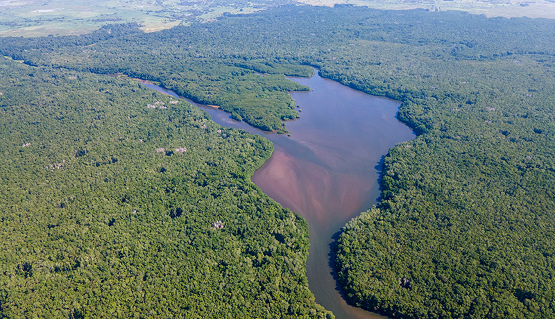

Playas del Pacífico
Arena volcánica característica, olas perfectas para surf y los atardeceres más espectaculares del país.

Monterrico
La joya del Pacífico guatemalteco. Hogar del Biotopo Monterrico-Hawaii, santuario de tortugas marinas y paraíso para surfistas.
Pacífico

Champerico
Puerto histórico fundado en 1872. Famoso por su muelle, gastronomía marina y tradición pesquera ancestral.
Pacífico

El Paredón
Pueblo de pescadores que se ha convertido en un refugio bohemio. Olas consistentes durante todo el año.
Pacífico
Playas del Caribe
Aguas cristalinas color turquesa, arena blanca y la vibrante cultura garífuna que hace única esta región.

Playa Blanca
El Caribe guatemalteco en su máxima expresión. Arena blanca, aguas tranquilas perfectas para snorkel y buceo.
Caribe

Livingston
Única ciudad guatemalteca accesible solo por agua. Cuna de la cultura garífuna, música punta y gastronomía caribeña.
Caribe

Punta de Palma
Playa virgen rodeada de cocoteros y selva tropical. Refugio natural de aves y vida marina.
Caribe
Playas Naturales
Destinos poco intervenidos donde la naturaleza predomina. Perfectas para desconectarse y disfrutar la tranquilidad.

Hawaii
Reserva natural protegida. Playas vírgenes donde desovan tortugas marinas. Ambiente rústico y auténtico.
Natural

Las Lisas
Destino familiar por excelencia. Canales navegables, esteros y excelente gastronomía local de mariscos.
Natural

Manchón Guamuchal
Humedal protegido entre Guatemala y México. Biodiversidad extraordinaria, aves migratorias y ecosistema único.
Natural